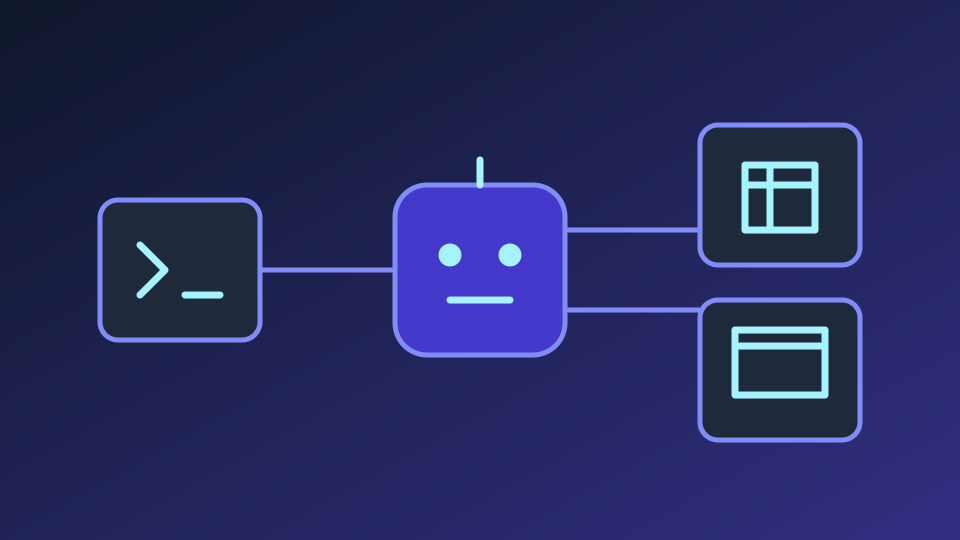

FakeOpenClaw
In Development
A Python AI agent connecting natural-language instructions with browser automation, spreadsheet operations, and local command execution through OpenRouter.
PythonSeleniumOpenRouter APILINE Messaging APIGoogle Apps ScriptGoogle Sheets APIGitGitHub
View on GitHub →
Project Overview
FakeOpenClaw explores how an AI agent can translate natural-language requests into executable actions. Users submit instructions through the terminal or Google Sheets; the Python agent consults an OpenRouter model, runs one command at a time, and returns each result to the conversation until the model provides a final answer.
The project demonstrates API integration, tool orchestration, browser control, and remote task input within a modular Python workflow.
Key Features
- Remote task input: receive prompts from the terminal or a polled Google Sheets cell.
- AI task planning: use OpenRouter to interpret requests and select the next shell, browser, or spreadsheet action.
- Selenium browser control: navigate pages, search Google, follow results, read visible page content, and capture screenshots.
- Google Sheets operations: read ranges, update cells and ranges, append rows, clear data, and export CSV or JSON.
- Command execution: run terminal commands and pass their output back to the agent for subsequent decisions.
- Response logging: append timestamped AI replies to Google Sheets while feeding tool results back into the agent conversation.
Technical Implementation
Agent loop: main.py combines agent rules and tool descriptions into a system prompt. It parses COMMAND JSON or DONE responses, dispatches commands, and feeds execution results back to the model.
Tool modules: sele.py handles Selenium browser actions, while google_sheet.py uses gspread and service-account authentication for prompt polling, spreadsheet operations, and reply logging.
Command validation: the Python dispatcher validates command types and restricts spreadsheet tool actions to configured worksheet names. Parsing and execution errors are returned to the model for another decision.
Technology stack: Python, Selenium, OpenRouter API, and Google Sheets API, with Git and GitHub for version control. LINE Messaging API and Google Apps Script support the owner-described messaging integrations.
Messaging Integrations
The project owner also describes LINE Bot and Google Apps Script integrations for remotely submitting instructions. These extend the messaging workflow; their implementation is not included in the published Python repository.